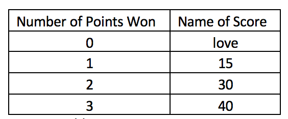

Problem made by Lockheed Martin, is CodeQuest 2017 Problem 10
This problem has a difficulty of 40
Tennis scoring is similar to other games, but it has been cleverly encoded to sound strange to non-tennis fans. Today, you will break this code and write a program to keep track of the score of a tennis game.
Game, Set, Match
When two players play each other in tennis, they are playing a tennis match. The overall objective is to win the match. A tennis match is made up of sets, and a set is made up of games. We will not concern ourselves with the match or set scoring today – only a single game.
A tennis game is made up of points. A player wins a tennis game by being the first player to win four points, but you must win by two. There are no tie-breakers in games.
What’s love got to do with it?
So far, tennis sounds easy, right? The clever encoding of tennis scores comes at the point level. The following table describes the different names for tennis points:

Tennis scores are usually separated by a dash with the server’s score first, and in our games player 1 will always be serving. Some example scores are 15-30 and 40-love.
When the score is tied, tennis does things a little differently. Tie scores of 15-15 and 30-30 are called “15-all” and “30-all” respectively. After this point, when the score is tied at 40-40 or beyond, the score is referred to as “deuce”.
Once a deuce situation is encountered, the score is called out according to which player has the “advantage”, meaning the player that needs to win the next point to win the game. So, after a deuce the only two possible scores would be “Advantage Player 1” or “Advantage Player 2”. Depending on who wins the point after that, either the game is over or the score is tied at deuce again.
The file Prob10.in.txt will contain an unknown number of lines. Each line will either contain a 1 or a 2, signifying which player won the point. Hint: if you’re using a BufferedReader to get your input (like the Hello World problem does), the readLine method will return null if the end of a file is encountered. So, a statement like while ((inLine = br.readLine()) != null) { might be useful to you.
1
1
2
1
1
1
2
1
2
1
2
1
2
2
2
Your program should print out the score of each game as it progresses. At the beginning of each game, you should print the text “Game start”, and when a game is won you should print “Game Player x”, where x is the number of the player that won. Your program should play as many games as it can until the input runs out.
Game start
15-love
30-love
30-15
40-15
Game Player 1
Game start
15-love
15-all
30-15
30-all
40-30
deuce
Advantage Player 1
deuce